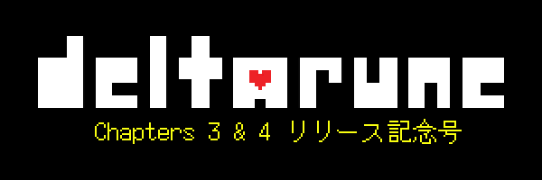
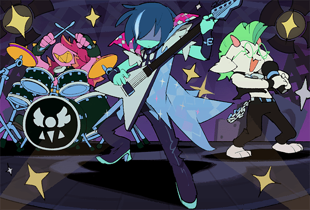
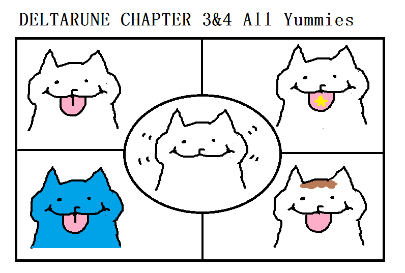
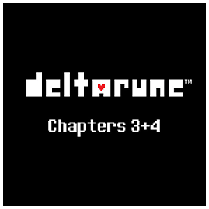
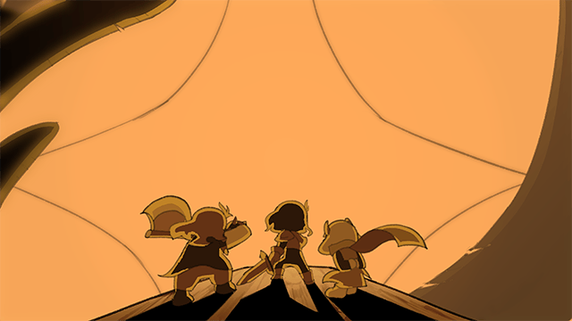

（イラスト by Temmie）
『DELTARUNE』Chapters 1-4 の Steam 版、Nintendo Switch 版、Nintendo Switch 2 版、PlayStation 4 版、PlayStation 5 版は、日本時間の 2025年6月5日 0:00AM に発売です。つまり…リリースまであと少し！くわしくは、deltarune.jp をご覧くださいね。

ネタバレについて、僕からは2つアドバイスを…
- ネタバレを踏んでしまうのが心配な方は、Chapter 3 と 4 を十分に進めるまで、SNS や動画サイトの利用を控えることをおすすめします。現在各ソーシャルメディアが導入しているアルゴリズムの仕組み上、『UNDERTALE』や『DELTARUNE』が大好きな方のアカウントでは、どの SNS やサイトでも、ネタバレが「おすすめ」に上がってくる可能性がきわめて高いです…
- SNS ユーザーの方は、ご自分のフォロワーにネタバレを見たくない人がいる場合、投稿の内容や、しかたには気をつけましょう。
とはいえ、僕が何を言っても、ゲームの内容を誰よりも早くすみからすみまで見せびらかしたくてしかたがない人たちを、止めることはできないでしょう。なので、みなさん各自、がんばって自衛に努めてください。
特にニュージーランドでは、他の地域のリリース時間より 3 時間前に、Nintendo Switch 2 版がリリースされます。フラゲした人たちがあなたの家の窓の外に現れて、「『DELTARUNE』Chapters 3 & 4、全ボス戦集」のサムネをベタベタ貼りまくることが予想されます（というか、もうやってるかもしれません…）。くれぐれもご注意ください。
それを踏まえたうえで… あまり急いでクリアしようとしないでくださいね。リラックスして、自分のペースで、楽しんでもらえたらと思います。個人的には、せめてチャプターごとに休憩を入れることをおすすめします……！
|
 |
サウンドトラックは、Bandcamp と Steam でリリースされます。他のプラットフォームでは、ゲームのリリース後すぐにはリリースされませんが、2～3 日後に検索すれば出てくるはずです。
ふだん他のプラットフォームを利用している方も、Steam で購入するのがいちばんおすすめです。Steam 版は、新チャプターがリリースされるたびにそのチャプターのサウンドトラックが無料で追加されるので、かなりお得です。
ただし、1 つ忠告を。ネタバレを回避したい方は、ゲームをクリアするまで曲名は見ないことをおすすめします。

僕が作ったゲームを累計何百～何千時間もプレイする、何十万人ものプレイヤーさんたちの中にバグを見つける人がいるだなんて、どう考えても絶対にありえなすぎることなので、考えるのもムダなわけですが…
一応…
もしゲームがクラッシュしたり、進行不可能になったりした場合は、メールで問題をご報告ください。アドレスは、[email protected] です。なお、ゲーム内に何か問題が見つかったときは、公式サイトの FAQ コーナーのページトップに載せますので、今後数週間はそちらをチェックしておいてくださいね。
リリース前にいくつかのごく軽微な修正を施すために、開発チームは先週、最後の調整を行いました。
ニンテンドーのプラットフォームではパッチのリリースにかかる時間が異なるため、Nintendo Switch 版と Nintendo Switch 2 版に関しては、リリース直後はこれらの修正が入りません。このため、この 2 つのバージョンでは、パッチがリリースされるまで、他のバージョンと比べてものすごくわずかな違いが出る可能性があります（Chapter 4 のとあるバトルの、とある「こうどう」の説明が表示されない、とあるオプションイベントが、意図しない状況でも発生する、など）。
今後、リリース後に発生したあらゆる問題への対応は、極力すぐに行う所存ですが、Nintendo Switch 版と Nintendo Switch 2 版については、他のバージョンよりアップデートに少し時間がかかる点、なにとぞご理解ください。
先日、公式サイトの「FAQ」コーナーを更新して、新しい質問をいくつか追加しました（セーブデータの取り込み方など）。追加された質問には「NEW!」と表示されているので、サイトをチェックしてみてください。こちらです↓
https://deltarune.jp/help/

この数年間、僕は何度も何度も、自分の気持ちを書いてきました。Chapter 3 と 4 について… それがみんなに、どんなふうに受け取られるかについて… Chapter 1 や 2 と比べてどんな感じか… どんな内容になるか…
でも、もういいんです。できあがったものが、すべてだから。あとはみんなが、答えを出してくれるはずです。
そんなわけで…
これを読んでくれているみなさんに伝えたいことは、ただ…
「いつも本当にありがとうございます」。
みなさんがいなかったら、このゲームを形あるものに仕上げることなんて、できなかったでしょう。
もちろん、ここまできたら、気にかけてくれる人がいようがいまいが、完成させます。でも…
お見せする相手がいたほうが、ずっと楽しいです。
なので、ありがとうございます。
楽しんでもらえたら、うれしいです。